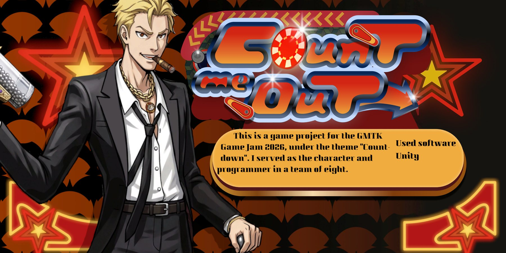
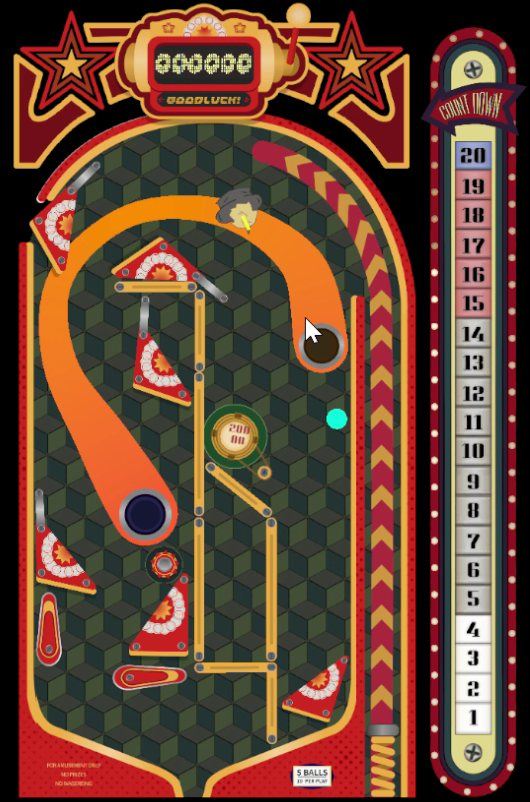
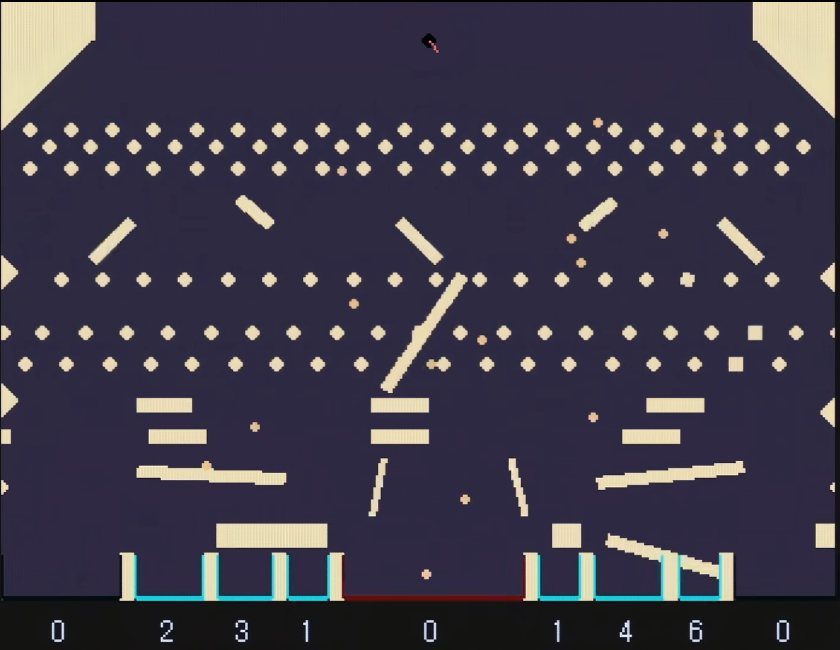
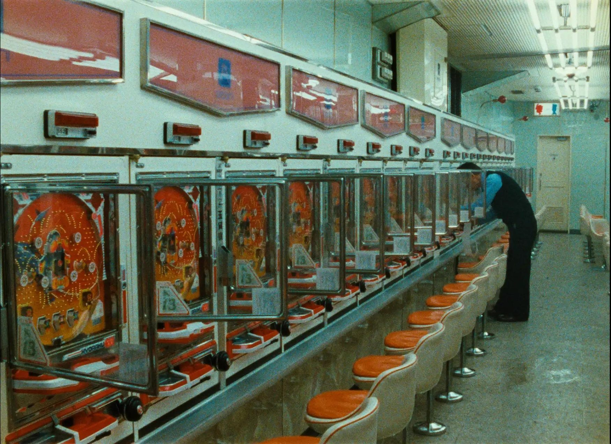
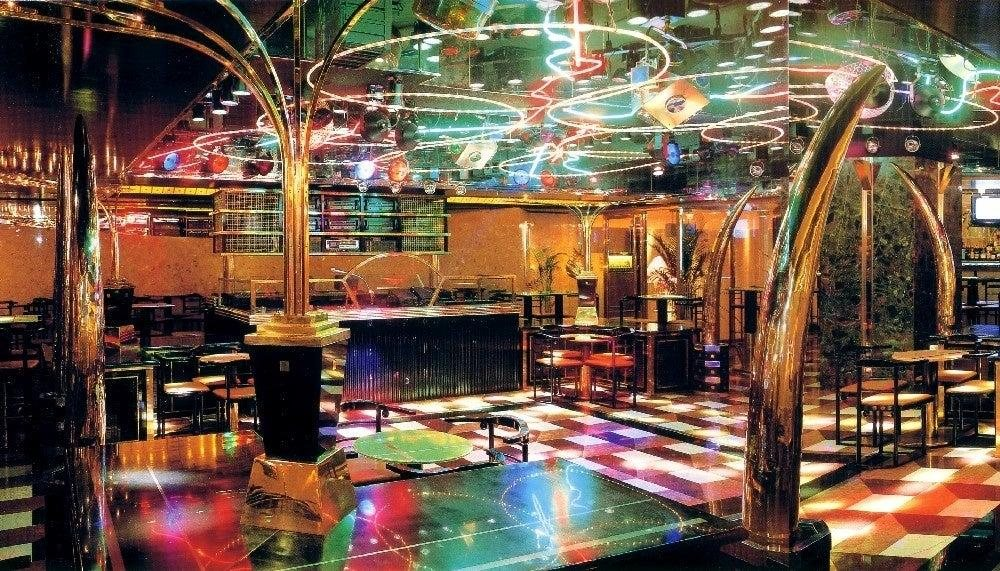
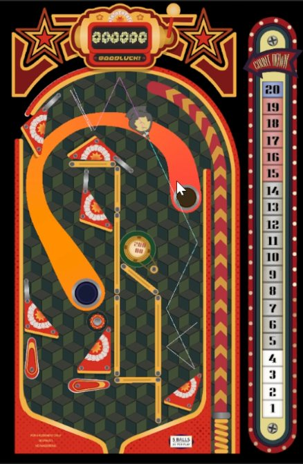
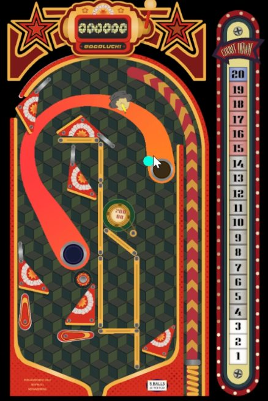
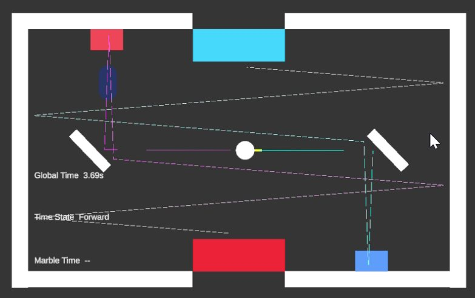

Count Me Out
A Unity game for GMTK Game Jam 2026. The theme was Countdown. I worked on gameplay programming in a team of eight.
Intro
As a Time Thief, escape the casino by rewinding time. Hold to aim and preview two paths from the same launch point, then release to fire.
Rewind to launch to bring the marble back to time zero. Keep rewinding to enter negative time and take a different route through the room.

Why a casino?
Pachinko gave us the feeling that one more steel ball could win back what you lost. For Countdown, we put the player inside the machine and made shooting and rewinding their way out.



The casino's side art draws on the excess of the bubble years.
Task Breakdown
Gameplay programming
Paused aiming
Dual trajectory preview
Negative-time guard defense
Audio and collision cues
Iteration and polish
Collision filtering
Preview accuracy
Aiming animation
Scene and layer fixes
Level integration
Merged gameplay, art and audio into the level. Built the win trigger, start and quit button logic, and pause menu. Exported the final build.
Teammates built the rewind framework, score system and main menu scene.
Game Design
Aim, predict, fire, rewind, interact, then progress.


Paused Aiming & Trajectory Preview

Two paths before launch
I built paused aiming on top of our shared rewind framework. The world stays still while the aim direction and both paths update.
Refining the bounce
I used the marble's collision radius, filtered hits and offset the next segment so it would not hit the same wall twice.
Making the preview match the shot
The live shot uses Rigidbody2D. For the preview I sweep the marble's actual radius, ignore non-blocking hits, and continue from just beyond the bounce surface.
Choose the closest valid collision
RaycastHit2D[] hits = Physics2D.CircleCastAll(
origin, marbleRadius, direction,
distance, collisionMask);
foreach (RaycastHit2D hit in hits)
{
if (hit.collider == null) continue;
if (hit.collider.isTrigger) continue;
if (ignoredRoot != null &&
hit.collider.transform.IsChildOf(ignoredRoot))
continue;
if (hit.distance >= closestDistance) continue;
foundHit = true;
closestDistance = hit.distance;
result = hit;
}
return foundHit;
Continue after a bounce
velocity = Vector2.Reflect(
velocity, collisionNormal);
if (velocity.sqrMagnitude < 0.0001f)
return;
origin = centerAtHit +
velocity.normalized * surfaceOffset;
I also mirrored the bumper's speed rules to keep the preview closer to the real shot.
From aiming to releasing the marble
Hold to aim
Time is paused. The thin lines preview the marble's two possible routes.
Release to launch
The preview lines disappear and the cyan marble moves under live physics.
Project Challenge
Prediction vs. live physics
The preview estimates collision and reflection. I checked it against the Unity shot and tuned collider filtering and the post-bounce offset.
Rewind state
My guard prototype intercepts normal shots. A negative-time marble can pass through during rewind and knock the guard down when forward play resumes.
Build setup
I connected the menu buttons and win flow, built the pause menu, and exported the final build.
Team retrospective
Separate prototypes let us work in parallel. Next time I want to help shape our answer to the theme before implementation.